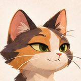
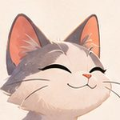

Tap, Space or E


Cappuccino and Asher, a broken music box, and seven tiny worlds hidden in the furniture.
Best in landscape on phones. Progress saves in this browser.
This erases your saved notes and treats.

Left side: drag to move.
Right side: drag to look around; double-tap to recenter.
Jump: jump. Hold it while falling to glide (once you have the crane).
Paw: talk, pull, ring. With nothing nearby, Asher pounces and Cappuccino uses Whisker Sense.
Swap or tap a portrait: switch cats.
Skill: your special ability. The arrow button picks between skills.
Move: W A S D or left stick
Look: drag the mouse or right stick
Jump: Space or A
Paw: E or X
Swap: Tab or Y
Skill: Shift or right trigger
Next skill: Q or right bumper
Map: M Pause: Esc or P
Cappuccino is cautious and careful. She never walks off an edge by accident (press Jump to hop down), pushes heavy crates, calms upset creatures with her purr, and her Whisker Sense reveals hidden things.
Asher is young and bold. He jumps higher, pounces, and can jump off Cappuccino's back for an extra-high Boost.